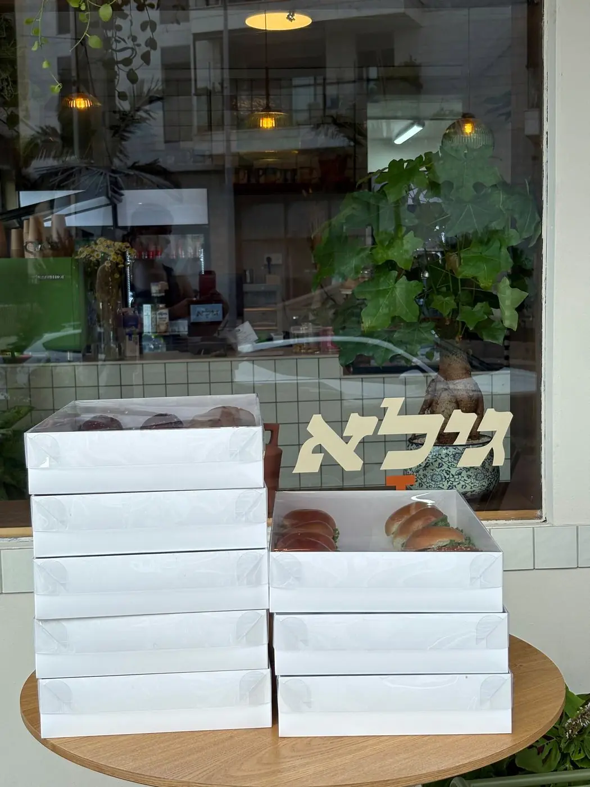
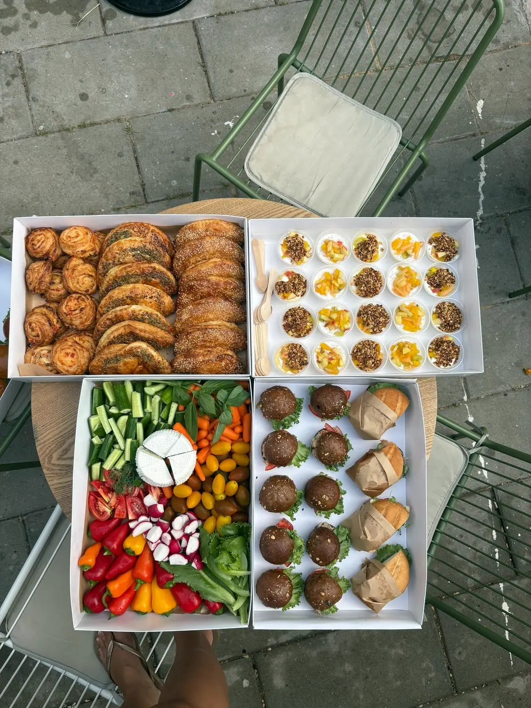
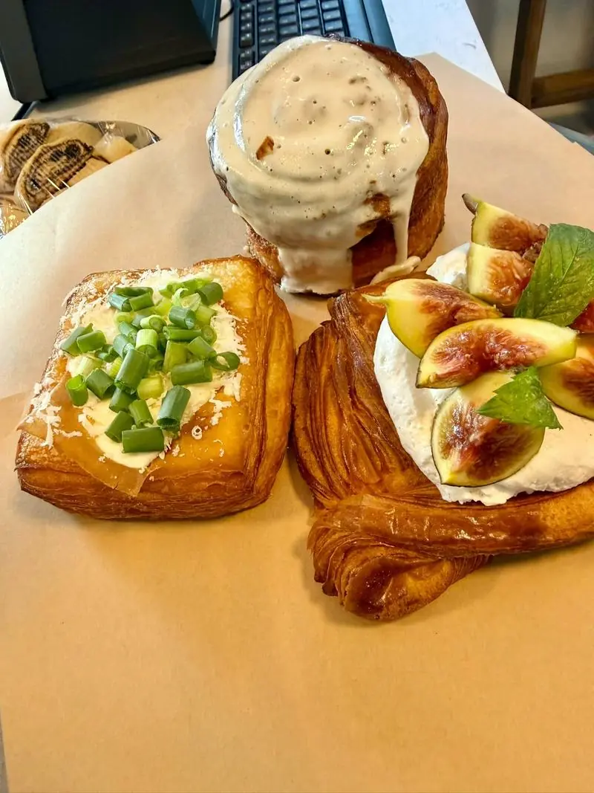
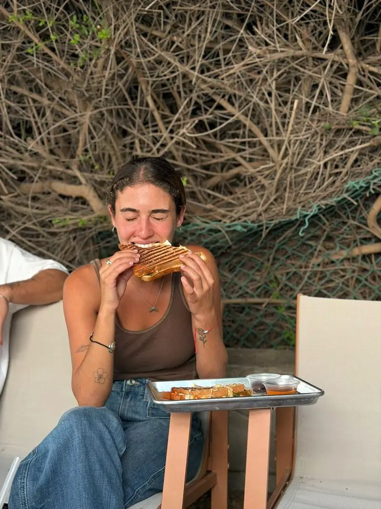
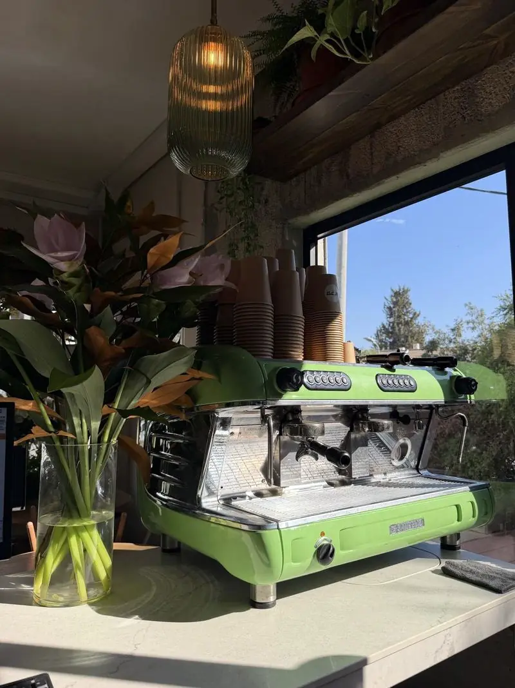
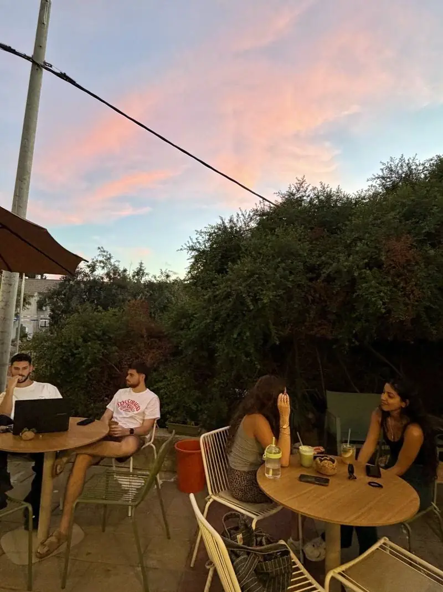
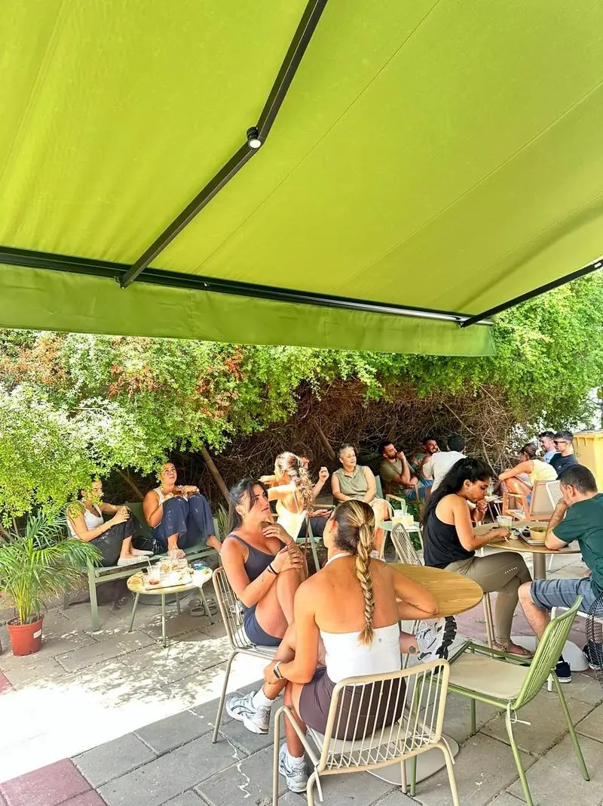
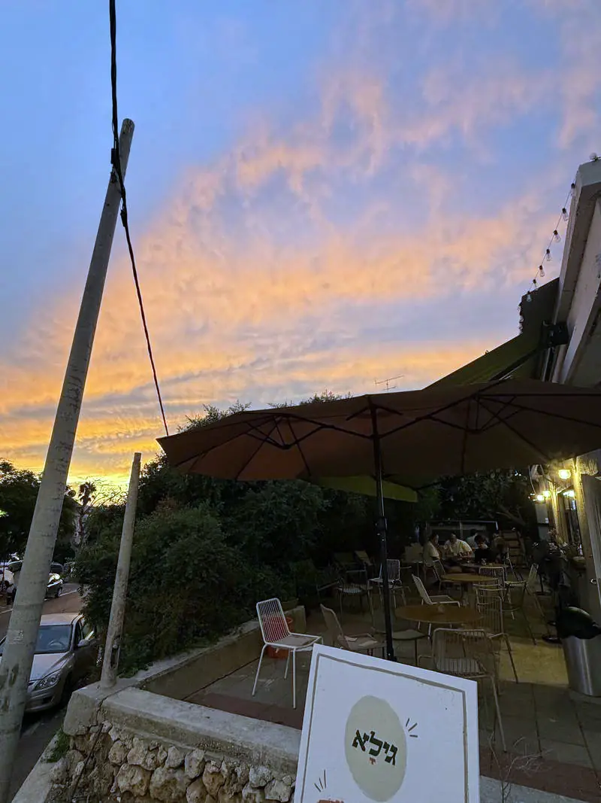

מהמטבח לשולחן
מרכיבים.
מיני כריכים, בייגלה, כוסות יוגורט, ירקות וגבינה. הכל מהתפריט של הדלפק.
אורזים.
קופסה לבנה, מלאה עד הקצה.
מגיעים לשולחן.
שלכם. ואם בא לכם לשבת, יש מרפסת.
בית קפה שכונתי · נס ציונה

קפה טוב, מאפים טריים, וכריכים שמישהו באמת הכין.
שאול המלך 7, נס ציונה.
שלוש דרכים להגיע אלינו
מטבח אחד מאחורי הדלפק, ושלושה דברים שיוצאים ממנו.


מהמטבח לשולחן
מיני כריכים, בייגלה, כוסות יוגורט, ירקות וגבינה. הכל מהתפריט של הדלפק.
קופסה לבנה, מלאה עד הקצה.
שלכם. ואם בא לכם לשבת, יש מרפסת.
מגשי אירוח
מיני כריכים, בייגלה, כוסות יוגורט וירקות. קופסה לבנה, מגש מלא.
מהדלפק




המרפסת
מתחת לסוכך יש מקום לשבת בלי למהר. הקפה יוצא מהמכונה הירוקה, והמרפסת שלכם.


הצד העסקי של גילא
כריכים לבתי קפה ועגלות שרוצים תצוגה כמו שלנו? מספרים לנו על העסק ומקבלים הצעה.
| ראשון | 12:00–19:30 |
| שני | 07:45–19:30 |
| שלישי | 07:45–19:30 |
| רביעי | 07:45–19:30 |
| חמישי | 07:45–19:30 |
| שישי | 07:45–16:00 |
| שבת | סגור |